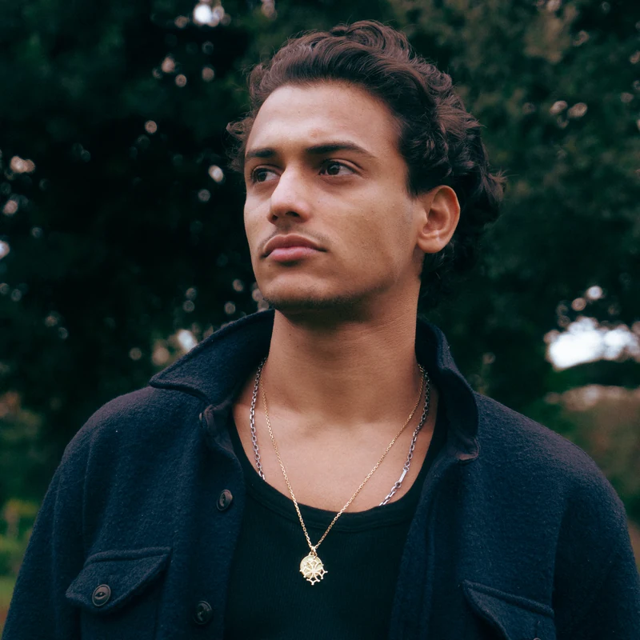

Portrait in Réunionnais du Monde
Samuel Chan-ashing, PhD student in mathematics in Paris
Réunionnais du Monde, the magazine of the Réunion Island diaspora, published an interview with Samuel in April 2026. The full text is in French; below is a short English summary of what it covers.
- 1RootsGrew up in Les Avirons, on Réunion Island, with family ties in Saint-Pierre.
- 2StudiesPreparatory classes on the island, then ENS Rennes, where he also led the student union and widened his interests beyond mathematics.
- 3Towards researchA two-month research stay at the University of Cambridge, obtained after many unanswered applications, then a master’s year at Sorbonne Université, the agrégation and a PhD in probability in Paris.
- 4ObstaclesBeing far from information and networks when coming from Réunion, impostor syndrome among overseas students, and getting used to life in Paris.
- 5RecognitionLaureate of the Talents de l’Outre-mer prize; he also sits on the expert committee of La Réunion Innovation.
- 6After the thesisAn interest in artificial intelligence and its geopolitical and security stakes, in industry or in public service.
- 7Réunion, seen from afarSupport for helping young graduates return to the island, and how living away has changed the way he sees its landscapes and Creole identity.
Summary written for this site. The interview and its wording belong to Réunionnais du Monde.